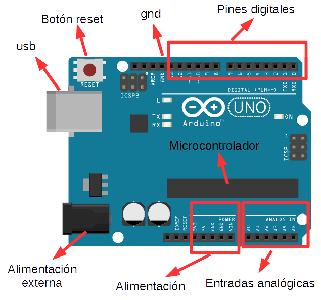

Partes:
Pines digitales (0 a 13, 5V 40mA) (6 Salidas PWM 8 bits): una señal es digital cuando sólo puede tomar dos valores (1 o 0, encendido o apagado, on off, etc). Sirven para conectar tanto salidas (actuadores) digitales (diodos led, motores, zumbadores, etc), como entradas (sensores) digitales (interruptores, pulsadores, finales de carrera, etc). Estos pines cuando se usan como salidas podemos decirles que estén conectados o no, que tengan voltaje (5V) o no (0V). Cuando se usan como entrada detectan cuando los elementos de entrada están cerrados o no. Cuando son de salida dan como máximo 5V y 40 mA.
Pines de alimentación o zona power: tenemos los pines gnd (ground tierra), sirven para cerrar el circuito, son el polo negativo de nuestra alimentación. Tenemos un gnd en la fila de los pines digitales y dos gnd más en la zona de alimentación (power). Además tenemos pines de alimentacón de 5V, 3,3V, y Vin. Este último sirve para dar alimentación externa a Arduino.
Entradas analógicas (A0 a A5, 0-5V 10 bits): sirven para leer de sensores (entradas) datos que pueden tomar muchos valores y por tanto no son digitales, como temperaturas (con ntc), luz (con ldr), etc.
Microcontrolador (ATMEGA 328P, 8 bit, 16Mhz, 32KB flash, 1KB EEPROM, 2KB SRAM): es el dispositivo dónde se guarda el programa y hace que se ejecute, así como controla todos los elementos de la placa. Sólo tiene almacenado un programa en memoria que se sobreescribe cuando se le sube otro.
Usb: es el puertor usb que sirve para dar alimentación a la placa y además comunicarse con el ordenador. A través de él subimos los programas a la placa.
Alimentación externa: conector que sirve para alimentar arduino con un elemento externo y que no se alimente por el PC (cargador, pila de 9v, etc). Soporta de 7 a 12V.
Botón de reset: cuando se pulsa reinicia el programa que tiene en memoria.